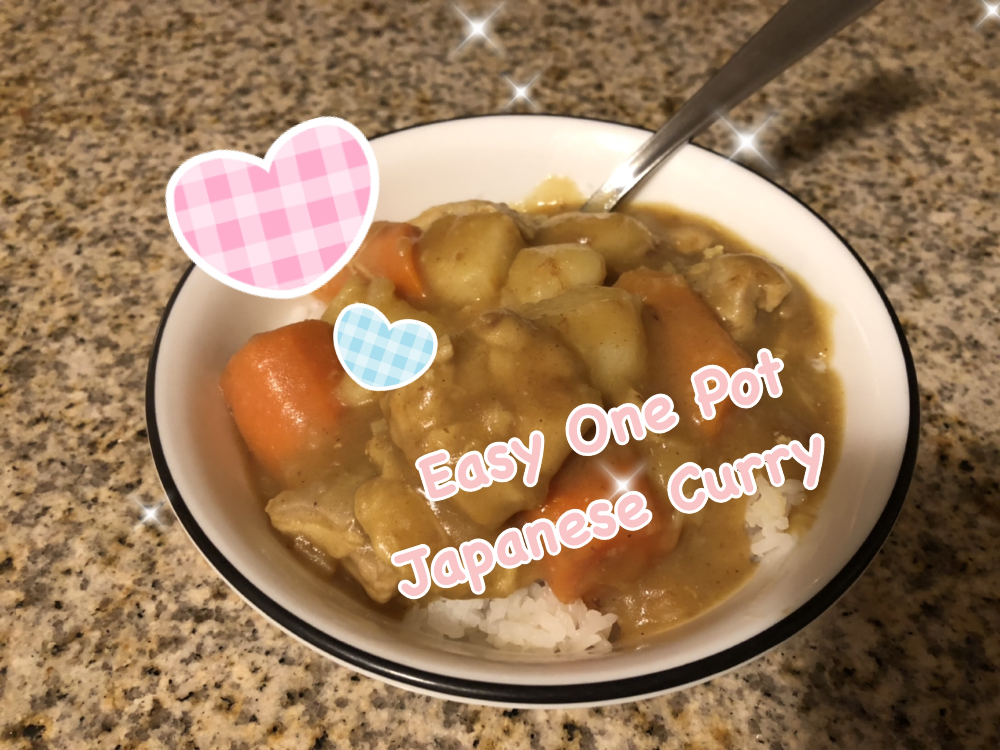

Japanese Curry

Description
An easy, one pot recipe for japanese curry
If you can boil water, you can make this delicious curry!
Ingredients
- Chicken
- Onion
- Potato
- Carrot
- Salt and Pepper
- Japanese Curry Cubes
Steps
- Chop chicken and veggies into bite sized pieces
- Saute onions in large pot until soft then add chicken
- Cook chicken until no longer pink and add potato and carrots. Saute for 5 minutes.
- Add water until everything is just covered
- Bring to boil and remove white foam
- Bring to simmer and cover with a lid for 15 minutes
- Add curry cubes and mix.
- Serve over hot rice!